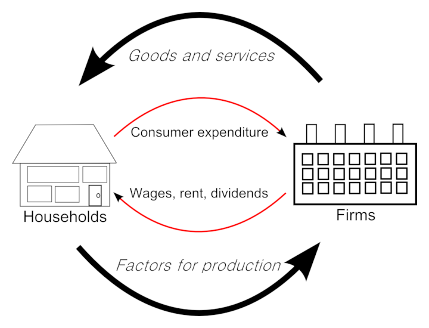

Table of Contents
2. The Market System
2.1. Introducing the Market System
2.1.1. Defining a Market System
2.1.2. Gains from Markets
2.1.3. Production Possibility Frontier
2.1.4. The Circular Flow Model
2. The Market System
2.1. Introducing the Market System
2.1.1. Defining a Market System
A market system is a way to match buyers and sellers.
Learning Objective
Identify the characteristics of a market system
Key Points
- Publishing current prices is a key component with a market system.
- Competition is the primary regulatory mechanism in a market system.
- Economists recognize a number of different structures of market systems based on characteristics such as the level of competition.
Key Term
- price
- The quantity of payment or compensation given by one party to another in return for goods or services.
In an economy, a market system is any systematic process that enables many market players to bid and ask. In other words, a market system is a place (virtual or physical) that facilitates the matching of buyers and sellers. Many markets exist, and each can be defined based on a number of characteristics, such as what is being exchanged in the market, the regulations, who is allowed to participate, and how transactions occur.
One defining component of markets is the medium of exchange, or the price. In most American markets, the medium of exchange is dollars. Both buyers and sellers look at the price to determine whether or not they want to trade. A seller has a certain minimum price at which s/he is willing to sell, though s/he would happily accept more. Likewise, a buyer has a certain maximum price at which s/he is willing to buy, though s/he would happily pay less. If the minimum the seller would accept is less than the maximum a buyer would pay, a transaction can occur. Markets help such buyers and sellers meet to trade.
In market systems, prices are discoverable; both buyers and sellers are capable of finding out the current price at which a transaction could occur. Publishing current prices is a key component with a market system. The chosen prices impact the immediate group of buyers and sellers, but also may impact long term supply and demand decisions within the market.
There are many examples of market systems. Perhaps the most famous is the stock market in which buyers and sellers trade stocks . The prices at which those sales occur is recorded, and is the basis for the stock price you may have seen in the newspaper or on TV. There are markets for many types of products other than stocks: the global oil market, your local farmers' market, and eBay are all forms of markets with their own defining characteristics.
Another important component of market systems is that there is competition, which serves as the main regulatory mechanism. Based on the level of competition in a market system, economists have identified a number of different types of structures, such as monopoly, oligopoly, and perfect competition. We will go into more detail on different market structures later in the book.
2.1.2. Gains from Markets
Gains in a market are referred to as total welfare or economic surplus.
Learning Objective
Explain how to calculate total welfare
Key Points
- Within total welfare, economists look at consumer surplus and producer surplus.
- Consumer surplus is the monetary gain that consumers receive when they purchase a good for less than the highest price they are willing to pay.
- Producer surplus is the amount that producers benefit by selling a good at a market price that is higher than the least that they would be willing to sell it for.
- In order to calculate the total welfare, the supply and demand of the good must be used to determine the economic gain.
- When the supply of a good increases, the price falls which increases consumer surplus. When the demand for a good increases, the price increases and the supply decreases resulting in producer surplus.
Key Term
- welfare
- Health, safety, happiness and prosperity; well-being in any respect.
Gains within a market are referred to as total welfare or economic surplus. Within total welfare, economists look at consumer surplus and producer surplus . A surplus is defined as the excess of a good or service when the quantity supplied exceeds the quantity demanded; this occurs when the price is above the equilibrium price.

The total welfare (or economic surplus) is the sum of the consumer surplus and the producer surplus.
Consumer surplus is the monetary gain that consumers receive when they purchase a good for less than the highest price they are willing to pay. For example, a customer is willing to pay \$50 for a new pair of running shoes. They are able to purchase the pair for \$35 and consumer surplus is \$15.
Producer surplus is the amount that producers benefit by selling a good at a market price that is higher than the least that they would be willing to sell it for. An example would be a manufacturer that makes jeans. The lowest price the producer is willing to sell a pair of jeans for is \$40, but the jeans actually sell for \$50. The producer surplus is \$10.
In order to calculate the total welfare, the supply and demand of the good must be used to determine the economic gain. On a demand and supply curve graph, the consumer surplus is located under the demand curve and above a horizontal line that shows the actual price of a good (equilibrium price).
When the supply of a good increases, the price falls which increases consumer surplus. When the demand for a good increases, the price increases and the supply decreases resulting in producer surplus. When a good is in high demand, consumers are willing to pay more in order to obtain the good.
2.1.3. Production Possibility Frontier
A production-possibility frontier (PPF) graphs the combinations for the production of two commodities with which the same amounts are used.
Learning Objective
Explain the benefits of trade and exchange using the production possibilities frontier (PPF)
Key Points
- A PPF graph shows the maximum production level for one commodity for any production level of the other commodity.
- If a point on the graph is above the curve it indicates efficiency, while a point below the curve signifies inefficiency.
- The PPF graph shows how resources must be shared among goods during the production process.
- Within an economy, if the capacity to produce both goods increases which results in economic growth.
Key Terms
- commodity
- Raw materials, agricultural and other primary products as objects of large-scale trading in specialized exchanges.
- marginal
- Of, relating to, or located at or near a margin or edge; also figurative usages of location and margin (edge).
Within a market system, economists use the production possibility frontier (PPF) to graph the combinations of the amounts of two commodities that can be produced using the same amount of each factor of production. A PPF graph chooses specific input quantities. As a result, it shows the maximum production level for one commodity for any production level of the other commodity . PPF is used to define production efficiency.
{kind=link}
A common PPF where there is an increase in opportunity cost.
Within a PPF graph, the use of a curve or line acts as a benchmark for measuring efficiency. If a point on the graph is above the curve it indicates efficiency, while a point below the curve signifies inefficiency. For further analysis, additional information is always supplied with a PPF including the period of time taken for the observation, production technologies, and the amounts of inputs that were available.
Economists can use a PPF to illustrate a number of economic concepts including scarcity, opportunity cost, productive efficiency, allocative efficiency, and economies of scale.
When an economy is operating on the PPF curve it is efficient. It is not possible to produce more of one good without decreasing the amount produced for the other good. Likewise, if the economy is operating below the PPF curve, it is inefficient. In this case, the economy can reallocate resources and produce more of both the goods.
The PPF graph shows how resources must be shared among goods during the production process. The points of the graph show the trade-off that takes place between two goods. For example, if more of Good A needs to be produced, the amount of resources in use by Good B must be reduced and transferred to Good A. The sacrifice in production of Good B is called opportunity cost. When graphing PPF there are three types: the common, the straight line, and the inverted PPF . All three of the PPF graphs are directly influenced by the opportunity cost.
{kind=link}
An inverted PPF where the opportunity cost is decreasing.
{kind=link}
A straight line PPF where the opportunity cost is constant.
The slope of the PPF shows the rate at which the production of one good can be transferred to another. The slope is called the marginal rate of transformation (MRT).
Within an economy, if the capacity to produce both goods increases, the result is economic growth. Factors that influence economic capacity include technology, an increase in the supply of factors of production, and production interactions such as trade and exchange. When any of these factors are used it allows for an increase in capacity so that the production of neither good has to be sacrificed.
PPF graphs help economists study the current state of production as well as possible production scenarios. The output of the economy is impacted by many factors. When production can be graphed and monitored it allows adjustments to be made to work towards attaining economic growth and stability.
2.1.4. The Circular Flow Model
In economics, a circular flow model is a diagram that is used to represent the monetary transactions in an economy.
Learning Objective
State the function of the circular flow diagram and the production possibilities frontier
Key Points
- There are two flows present within the model including flows of physical things (goods or labor) and flows of money (what pays for physical things).
- The circular flow of income follows a specific pattern: Production → Income → Expenditure → Production.
- The production possibility frontier can be used to illustrate the circular flow model.
- Economists use data, statistics, and natural experiments in order to make economic "laws" that explain general patterns.
Key Terms
- expenditure
- Act of expending or paying out.
- Factors of production
- In economics, factors of production are inputs. They may also refer specifically to the primary factors, which are stocks including land, labor, and capital goods applied to production.
In economics, a circular flow model is a diagram that is used to represent the monetary transactions in an economy. There are two flows present within the model including flows of physical things (goods or labor) and flows of money (what pays for physical things). A circular flow model depicts the inner workings of a market system and specific portions of the economy.
The basic circular flow model consists of two sectors that determine income, expenditure, and output. A state of equilibrium is reached when there is no tendency for the levels of income ($E$), and output ($O$) to change ($Y=E=O$). This equation means that the expenditure of buyers (households) becomes income for sellers (firms). The firms spend the income on factors of production, which "transfers" the income to the factor owners. The factor owners spend the income on goods which leads to the circular flow of payments .
{kind=link}
The circular flow model shows the flow of payments between households and firms.
The circular flow of payments is important within an economy because it 1) measures the national income, 2) provides knowledge of interdependence, 3) illustrates the unending nature of economic activities, and 4) shows injections and leakages.
The circular flow of income follows a specific pattern: Production → Income → Expenditure → Production. This circular flow is ongoing between households and firms.
The circular flow of income can also be analyzed using the production possibility frontier (PPF). The PPF is a graph that shows the various combinations of amounts of two commodities that could be produced using the same fixed total amount of each of the factors of production. The graph shows the maximum possible production level of one commodity for any production level of the other, based on the state of technology. The PPF defines production efficiency. A point of the frontier line indicates the efficient use of available inputs, while a point beneath the curve shows inefficiency. A PPF graphs shows opportunity cost, actual output, potential output, and economic growth.
{kind=link}
The graph illustrates a typical production possibilities frontier curve. When a market is operating on the PPF it is said to be efficient.